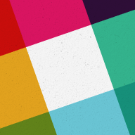
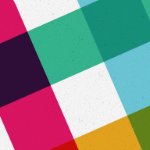
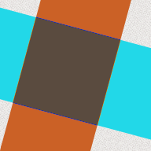

lcarson35 4:19 PM
joined #resources
piratedunbar 8:08 PM
expressjs.com
piratedunbar 8:47 PM
http://www.bootstrapcdn.com/
Bootstrap CDN
thegerscheffect 8:03 PM
joined #resources. Also, @emhendy joined.
michelewu1 8:17 PM
joined #resources. Also, @oliver84 joined, @stellated joined, @annelise joined, @josequiroz joined, @arturojreal joined, @donyadd joined.
piratedunbar 8:23 PM
https://atom.io/
Atom
A hackable text editor for the 21st Century
At GitHub, we’re building the text editor we’ve always wanted: hackable to the core, but approachable on the first day without ever touching a config file. We can’t wait to see what you build with it. (32KB)
fgarcia4047 9:19 PM
https://www.khanacademy.org/computing/computer-programming/programming
Khan Academy
Intro to JS: Drawing & Animation
Learn how to use the JavaScript language and the ProcessingJS library to create fun drawings and animations. (5KB)